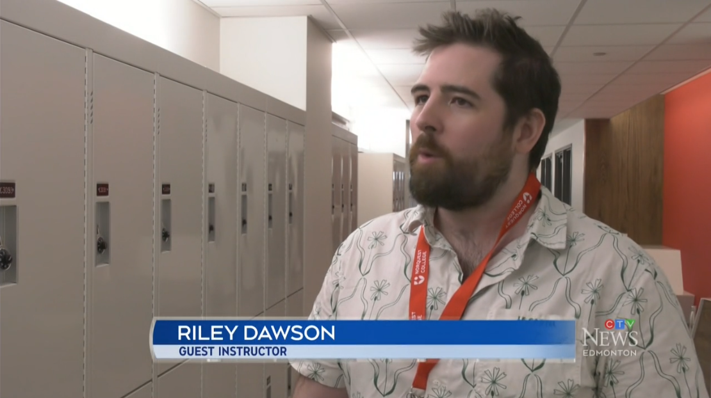
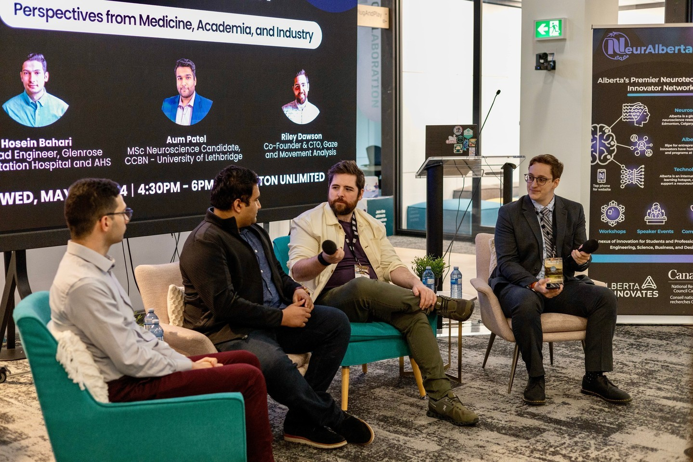
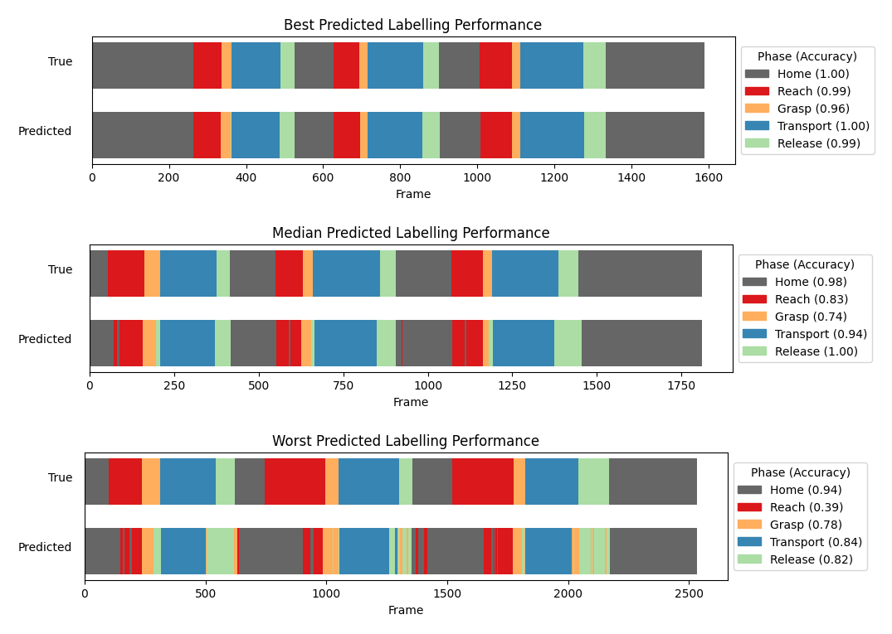
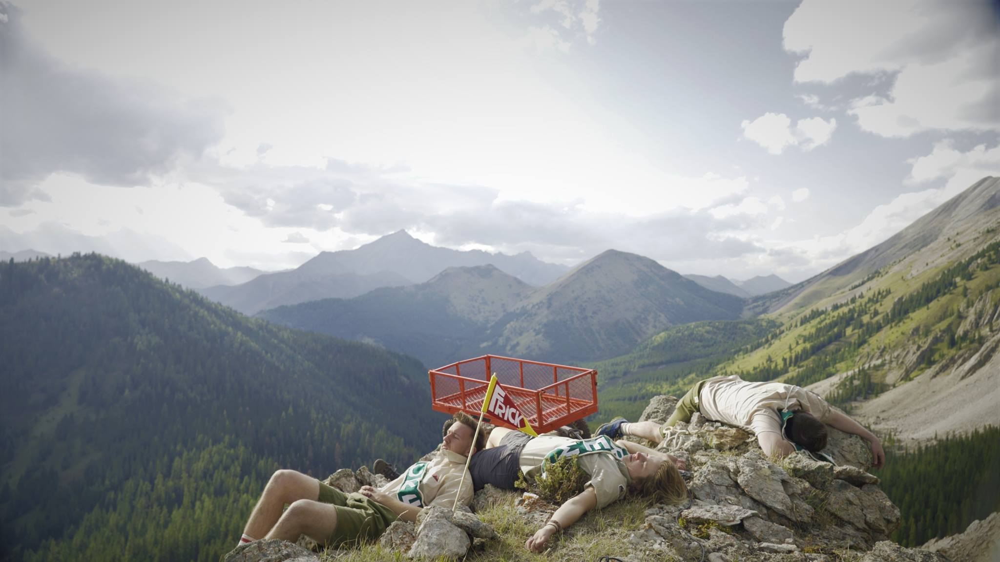
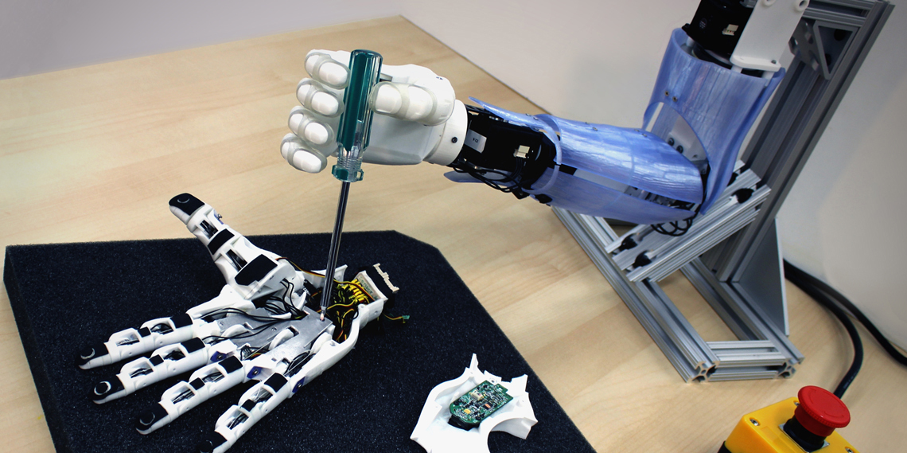
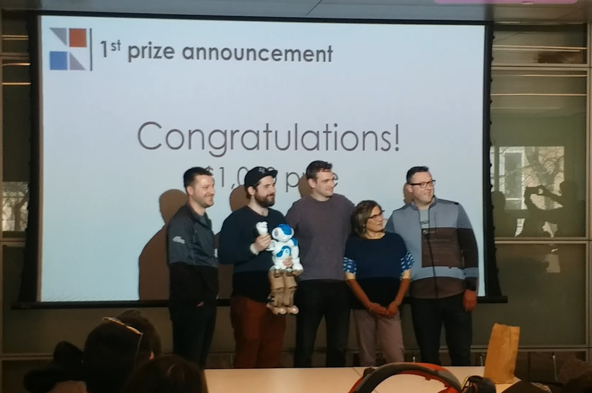
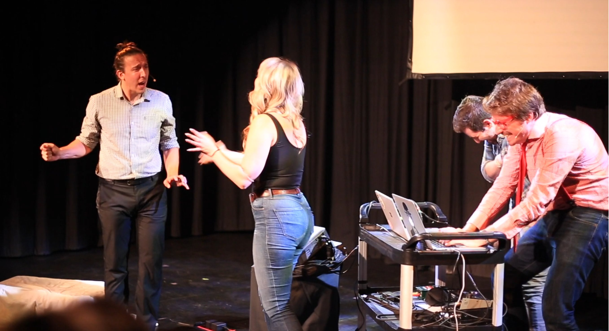
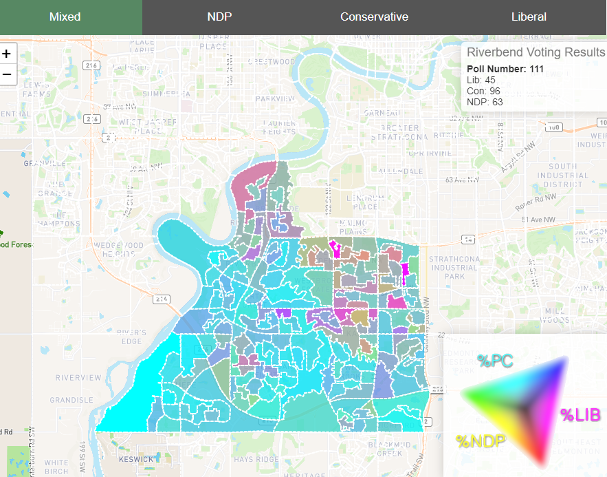

Projects/Media
Shot Coach - ZerOne Hockeyology
Created a golf swing-esque motion analyzer, built specifically for hockey slap shots. I worked with professional shot coaches to design the metrics and benchmarks, and built the pipeline around the Orbbec Femto Bolt depth camera with the Azure Kinect Body Tracking SDK.
The pipeline consists of a recording system that handles the initial capture and body landmark detection, and a dockerized web application that breaks each shot into phases, scores the movement, and generates a summary PDF report.
The platform launched at the facility in April 2026 and ran 349 assessments in its first six months. I ran the first two months of sessions myself, then trained six staff to run the whole pipeline on their own.
NorQuest College - 3D Printing and Robotics Camp
Designed and facilitated a one-week 3D Printing and Robotics Camp for junior high students. We had one camp in 2025, two in 2026, and the college is planning to expand the program moving forward. Both of the instructors I worked with are coming back for more.
Robotics camp teaches young students elements of design, construction - CTV News

GaMA - Gaze and Movement Assessment
Led the development of GaMA, a platform that turns raw motion capture and eye tracking recordings into analysis-ready data about how people move and where they look. Before GaMA, gaze data was labelled by hand and motion analysis was mostly limited to single joint angles.
GaMA started as part of a DARPA-funded prosthetics project at the BLINC Lab. It's since been used by research teams at the University of Alberta, the University of Auckland, and Shirley Ryan AbilityLab, has supported at least seven peer-reviewed studies, and is now the backbone of the company I co-founded.

AI in Neurotech - A panel discussion
Was delighted to participate in "An Interdisciplinary Panel on AI-Enabled Neurotechnology: Perspectives from Medicine, Academia, and Industry", a community session of Amii's 2024 Upper Bound Conference.
Huge thank you to NeurAlberta Tech (now Network for Applied Technology) for hosting and the invite!

MEng Capstone - Auto-Segmenting Motion Capture Data
Opted to tackle a neeeeedlessly large project as my MEng Capstone.
Breaking down complex, multi-action movements into discrete motions is one of the most arduous parts of analyzing motion capture data. GaMA does it with hand-built rulesets, which take expertise and a lot of iteration to get right. I wanted to see if machine learning could learn the segmentation from labelled examples instead.
Using 1,371 labelled trials collected across four sites, I benchmarked LSTMs against simpler MLP baselines in JAX. The best LSTM hit 93% frame-level accuracy, but the MLPs came surprisingly close, which suggests the problem depends far less on history than expected. Gradient-boosted trees are the natural next experiment.
Laying The Foundations for Real-Time Auto-Segmentation of Time Series Gaze and Movement Data (PDF)

Frick I Love Nature
Was a production assistant and b-roll cameraman for select segments of a couple of episodes of Frick I Love Nature. This was completely unrelated to any tech stuff, but was an absolute blast.
Amazing Animals in the Rocky Mountains - Mountain Goats, Lichen and Pikas - Frick I Love Nature

Axis Reloaded
Worked with Eric Wells and Mark Sherstan to design, construct, and program a robotic kinetic sculpture as a hardware demo for the University of Alberta Faculty of Engineering.
The "claw" uses machine vision (a webcam in the palm) to track deviations in the rotating plate and trigger a re-center. The whole device is self-contained and autonomous, using a Raspberry Pi for trajectory calculation and device control. This project was additionally demoed at the January 2020 edition of Telus World of Science's Dark Matters.
Interview with New Trail Magazine
Spoke with New Trail Magazine about the Bento Arm, the BLINC Lab's open-source prosthetic training and testing platform. Who would win in a fight, the Bento Arm vs an Octopus Tentacle?
SMACKDOWN - New Trail Magazine Winter 2019 (p. 19)

ISARC Constructing Futures Hackathon
Competed and won first place in the 2019 ISARC Constructing Futures 24 Hour Hackathon. I added a cloud-based image classifier layer to a VR robotic control platform that I had previously created.

HumanMachine
Created and operated the Nao Robot control interface used for a Sq2Seq RNN-powered improv show in the 2018 Edmonton Fringe festival. Performed alongside Kory Mathewson + Piotr Mirowski.
Artificial intelligence put to the test during Edmonton Fringe Festival show - Global News
Improbotics: Exploring the Imitation Game using Machine Intelligence in Improvised Theatre

AB Riverbend Vote Map
One of my friends ran in the federal election a number of years ago, and we were curious which riding neighborhoods he should focus on. I pulled historic voting data and created an interactive map to show how support was trending and most concentrated.
My buddy ended up doing better than the previous candidate for their party in that riding, which is pretty neat.
You can check out the interactive version here. (not optimized for mobile screens, like at all)
